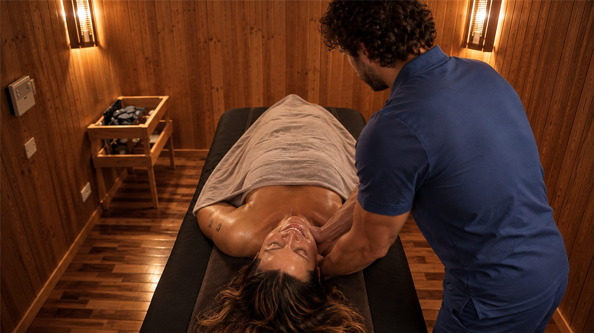
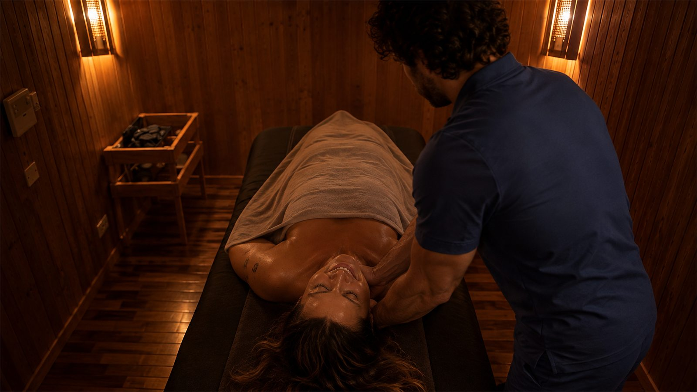
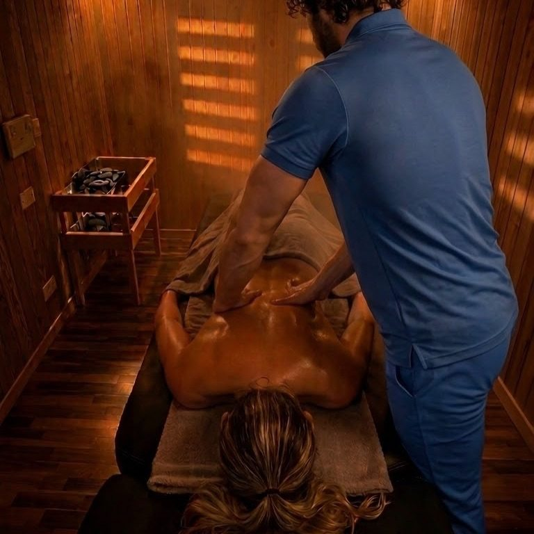

Le 8 sale / Sala 04 di 08 / Studio 1
Un lettino dentro una cabina di legno a calore secco.
Sala Biosauna · 30–43 °C · umidità 10–15% · drenaggio amplificato · InBody prima e dopo
Si entra a trenta gradi, si sale solo se vuoi. Il calore apre i vasi prima delle mani, e la perdita di liquidi si misura con l'InBody prima e dopo la stessa ora.
Perché esiste
Volevo che il calore lavorasse al posto della forza.
Un drenaggio corretto non spinge: la linfa scorre in superficie, a pressione bassa, e premere forte chiude i vasi che dovrebbe aprire. Se non posso usare la forza, posso usare il calore: la vasodilatazione fa muovere i liquidi con meno resistenza, e le mani fanno il resto.
Il problema è che una sauna normale non è fatta per starci sdraiati un'ora sotto due mani: troppo calda, troppo umida, senza lo spazio per lavorare. Volevo una cabina pensata per il massaggio, non per la sudata.
Così è nata la biosauna: calore secco e regolabile, un lettino vero al centro, e la possibilità di misurare quanto è successo.

Com'è stata progettata
Nessuno la costruiva. L'ho fatta costruire.
Quando ho descritto il progetto, un lettino da massaggio dentro una sauna a calore secco con infrarosso, pietre e vapore aromatico, non esisteva niente di simile da comprare. La cabina è stata realizzata su misura: legno, una stufa a pietre, un pannello a infrarossi, e lo spazio per muovermi attorno al lettino.
La stufa scalda l'aria tra i 30 e i 43 gradi, con l'umidità tenuta al 10–15%: a trenta gradi si respira meglio che in una giornata di luglio a Padova. Il pannello a infrarossi non scalda l'aria ma il corpo, qualche centimetro sotto la pelle. Sulle pietre cade acqua con oli essenziali biologici per tutta la durata del trattamento.
Le pietre di basalto si scaldano sulla stufa e, se vuoi, passano lente lungo la schiena.
La dotazione
- Temperatura 30 °C di base, fino a 43 su richiesta
- Umidità 10–15%, aria secca
- Infrarosso Pannello che scalda il corpo in profondità, non l'aria
- Pietre Basalto scaldato sulla stufa: hot stones integrate nel massaggio
- Aromi Oli essenziali biologici sulle pietre: cirmolo, agrumi, balsamici, menta
- Misura InBody 770 prima e dopo, su richiesta
Cosa succede nella seduta
Un'ora in Sala Biosauna, passo per passo.
La prima misura
Se misuriamo, l'InBody si fa adesso: acqua extracellulare arto per arto.
Il legno profuma
Ti sdrai. Il calore comincia a lavorare da solo per qualche minuto. Il termostato lo scegli tu.
Con la pelle già calda
Drenante nei tre metodi o Detensionami: i vasi sono aperti, le manovre scorrono. Se vuoi, le pietre.
La seconda misura
Doccia, acqua, e di nuovo l'InBody. Il numero lo leggi tu, sullo stesso strumento, a distanza di un'ora.
I vantaggi
Quello che questa sala aggiunge alle mani.
Più liquidi nella stessa ora
La vasodilatazione da calore fa il lavoro di apertura prima delle mani. È il motivo per cui i programmi mirati qui chiedono cinque sedute, non dieci.
Un risultato che si legge
È la sala dove più spesso misuro prima e dopo: la perdita di liquidi extracellulari di un drenante in biosauna si quantifica in tempo reale.
I muscoli mollano prima
A trenta gradi la muscolatura è già meno difesa. Un decontratturante parte da un punto diverso.
Pelle e respiro
A 40–43 gradi si suda davvero: la pelle si libera di olio e impurità superficiali, l'aria con gli oli balsamici apre il respiro.
Calore che si sceglie
Non è una sauna da subire. Si parte da trenta e si sale solo se lo chiedi.
Per chi è
La stanza si sceglie insieme, seduta per seduta.
Nessuna sala è giusta per tutti. Queste sono le indicazioni che do di solito; il resto lo decidono i numeri dell'InBody e una chiacchierata.
È la sala giusta per
- Chi fa un percorso drenante e vuole vederlo nei numeri
- Chi ha sempre freddo e non riesce a mollare sul lettino
- Chi vuole un decontratturante con i muscoli già caldi
- Chi ama il legno, il calore e il silenzio
Meglio un'altra sala se
- Chi il caldo non lo tollera proprio: la Sala Emozionale drena senza scaldare l'aria
- Chi ha condizioni per cui il calore è sconsigliato dal medico: dimmelo prima e scegliamo altro
- Chi vuole la sauna finlandese vera, a 80–100 gradi: quella è nello Studio 2
Perché non la trovi altrove
Un massaggio dentro una sauna non è una sauna con un lettino.
La cabina è stata disegnata per lavorarci un'ora: lo spazio attorno al lettino, il calore secco e basso, l'infrarosso, le pietre e l'acqua aromatica sulle pietre. È il motivo per cui qui una seduta a 40–45 gradi è un supplemento che si prenota, non un'opzione che si improvvisa.


Prima di prenotare
Quello che di solito mi chiedono su questa sala
Quanto si suda?
A 30 gradi quasi nulla: è calore confortevole. A 40–43 si suda davvero, e lo misuriamo.
Posso scegliere la temperatura?
Sì. Si entra a 30 e si sale solo se lo chiedi. I 40–45 gradi sono un supplemento sui 60 minuti.
Quale massaggio si fa in biosauna?
Tutti quelli dello studio: drenanti nei tre metodi, Detensionami, decontratturante. La scelta la facciamo sui dati InBody.
È adatta se ho la pressione bassa?
Ne parliamo prima. A 30 gradi e con umidità bassa la maggior parte delle persone sta bene, ma se hai dubbi chiedi al tuo medico e scegliamo la sala giusta.
Le otto sale
Otto sale. Un solo massaggio: il tuo.


Il passo successivo
Scrivimi: scegliamo insieme se è la sala giusta.
Due righe su WhatsApp con quello che cerchi. Ti rispondo io e, se vuoi, fissiamo la prima analisi InBody.
334 79 18 516